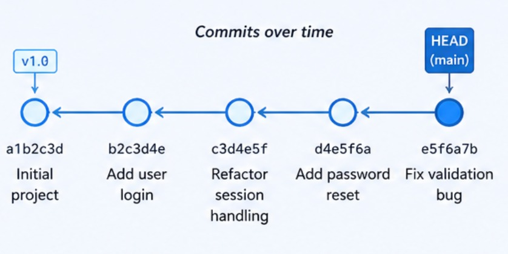
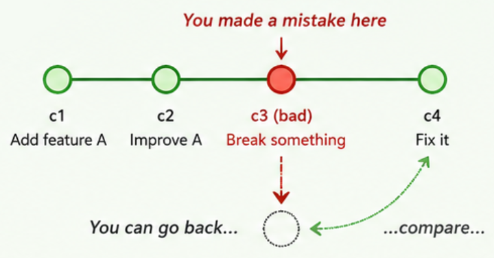
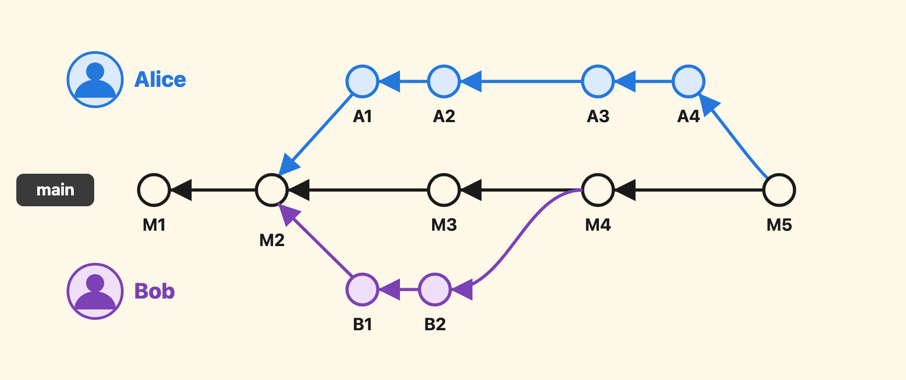

Version control is a system for recording changes to files over time so that you can recall earlier versions, compare revisions, identify what changed, and understand who changed it. In practice, version control helps with both individual work and collaboration. Without it, you often end up relying on duplicate folders, renamed copies, or manual backups.
Take a file called FIT2109_Assignment_1.doc. To keep an old version before making risky edits, you might duplicate it and rename the copy FIT2109_Assignment_1_v2.doc, then keep adding new content into it. This works for a while, but it gives you no clear history, no easy way to review what changed between versions, and no disciplined way to recover from a mistake — you are left guessing which file has which version of which change.
Version control lets you record changes so that specific versions can be recalled later. These systems evolved as software projects became larger and more collaborative. Early tools such as RCS (Revision Control System) focused on managing multiple revisions of individual files, making it easier to store, retrieve, log, and merge changes over time. CVS (Concurrent Versions System) extended that idea to team-based development, keeping version history on a central server so multiple developers could work on the same codebase. Subversion (SVN) followed as a more robust centralised system, explicitly designed as a successor to CVS with better reliability and usability for larger projects.
As collaboration became more distributed, systems such as BitKeeper and Mercurial emphasised local repositories, offline work, and easier branching and merging — shifting the model away from a single central server. This transition, from file-level revision tracking, to centralised team workflows, to fully distributed development, explains why modern software engineering places so much emphasis on branching, merging, and local history. The history of version control is not just a sequence of tools; it is a progression in how developers think about collaboration, change, and project history — and it sets the stage for Git.
Git itself arrived in 2005. The Linux kernel community had been using BitKeeper, but lost free access to it when its licence terms changed — so Linus Torvalds wrote a replacement, taking the distributed model and making it fast enough for one of the largest collaborative codebases in the world. Git spread far beyond the kernel, and today it is the version control system almost the entire software industry has settled on.
Git is a free and open-source distributed version control system: every collaborator holds a full copy of the project's history, not just its latest snapshot. It supports three broad needs at once.
1. It supports history — you can inspect how a project evolved rather than only seeing its latest state. Each saved point in that history is called a commit: a labelled snapshot of your project at one moment in time, kept permanently so you can come back to it later.

v1.0 that pin one exact point permanently (more on these later this week).2. It supports recovery — if a change turns out to be mistaken, Git gives you structured ways to compare and revert rather than forcing you to guess what the project looked like before.

3. It supports coordination — multiple people can work on the same project while preserving a detailed record of how their changes relate to each other. Even in an individual project, Git is valuable because it helps you break work into meaningful, reviewable steps instead of treating the project as a single undifferentiated blob of files.

Git is different from many older version control systems in an important conceptual way. Rather than treating history as a simple sequence of file differences, Git treats project history as a series of snapshots. Every time you commit — that is, confirm the changes to a set of files — Git effectively takes a picture of what all your files look like at that moment and stores a reference to that snapshot. If a file has not changed, Git does not need to store it again; it reuses the earlier stored object. This "snapshot" idea affects almost everything else in Git, including how commits, branches, and merges work. It is one of the reasons Git's model can feel unusual at first, but also one of the reasons branching and merging are so powerful.
Another major feature is that Git is distributed. In a centralised model, the server is the only complete copy of the history, and users essentially work as clients of that centre. In Git, every clone contains the full Git directory and object database for the project, so each developer has a complete local repository rather than only a partial checkout. That design makes local operations such as branching, committing, and inspecting history fast, and it also means collaboration does not depend on constant network access. You can still use a shared remote repository as a focal point — that is the subject of Week 5 — but Git does not require a purely centralised mindset.
FIT2109 · Week 4 · Monash University · by Dr. Zahra Mirzamomen